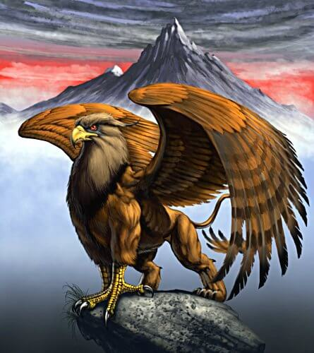

Рух (араб. رُخّ , рухх) или птица-слон — в средневековом арабском фольклоре огромная (как правило, белая) птица размером с остров, способная уносить в своих когтях и пожирать слонов и каркаданнов. На Ближнем Востоке её ареалом обычно считались пределы Китая, а в самом Китае — Мадагаскар и прилегающие к нему острова.
